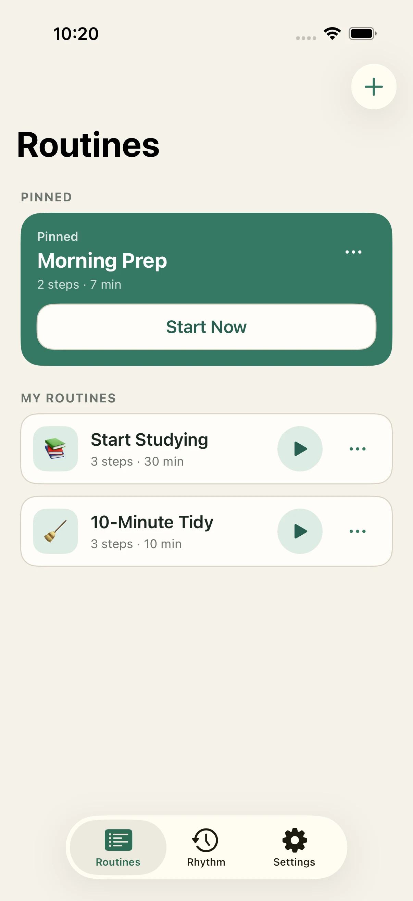
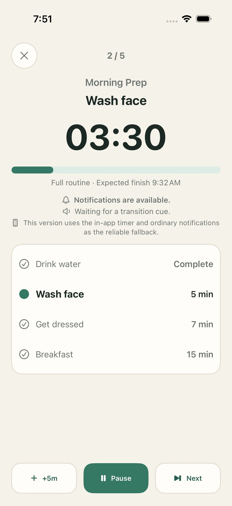
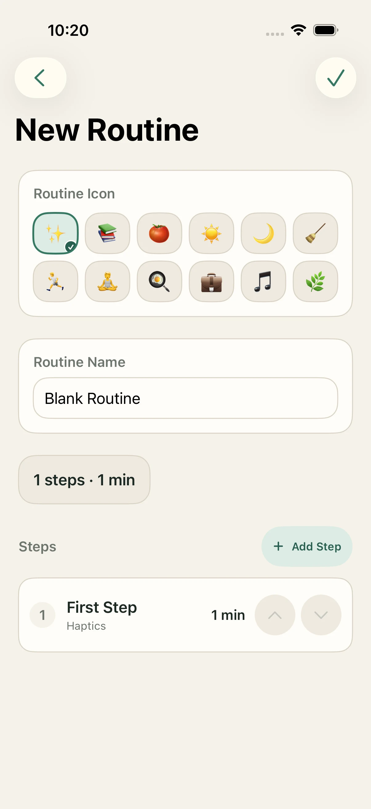
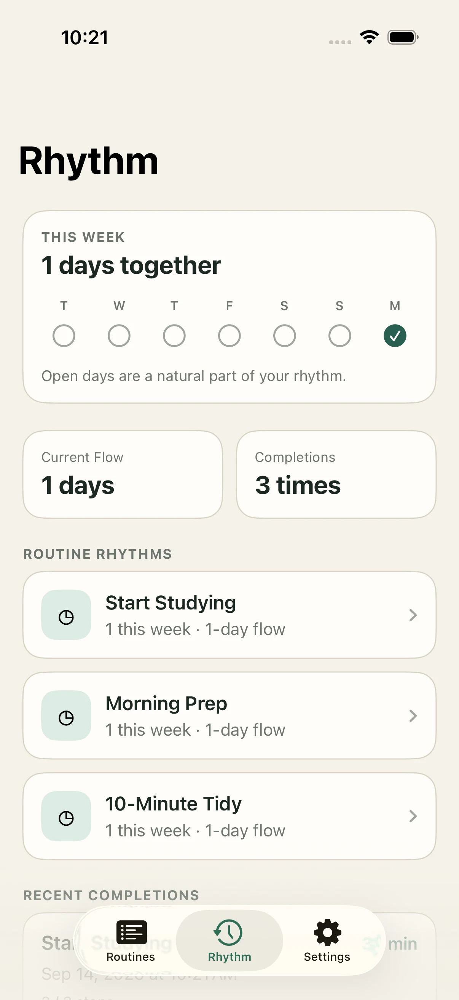

01
Start from a routine
Keep morning, study, cleaning, and exercise routines together. Pin the one you use most.

A calmer routine timer
Turn everyday routines into clear, timed steps. See what matters now, what comes next, and when you’ll finish.

One routine, one clear flow
Build a sequence once, then let StepCue keep the whole routine visible and easy to follow.
Keep morning, study, cleaning, and exercise routines together. Pin the one you use most.

Name each step, set its duration, and arrange the order that feels right for you.

Look back without judgment. See recent completions and the routines you’ve returned to.

Designed for trust